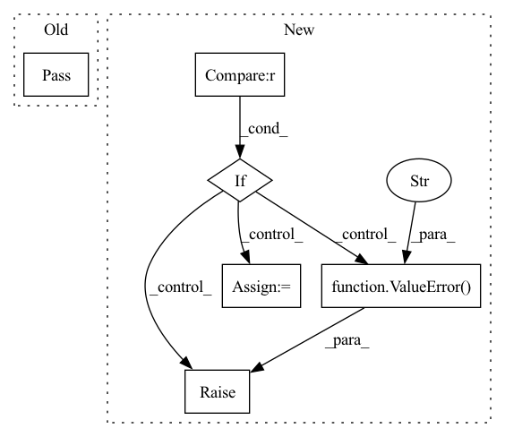

Pattern ID :262

Before Change
Returns:
pass
@classmethod
def to_display(cls, x):
r
After Change
Returns:
if pred.ndim != 5 or target.ndim != 5:
raise ValueError(f"{self.NAME} expects 5-D inputs!")
value = self.criterion(pred, target)
return value.sum(dim=(4, 3, 2)).mean(dim=1).mean(dim=0)
def reshape_clamp(self, pred: torch.Tensor, target: torch.Tensor):
In pattern: SUPERPATTERN
Frequency: 3
Non-data size: 6
Instances
Fragment ID: 914285
Project Name: ais-bonn/vp-suite
Commit Name: 4b7d4c54cdaa9147f544bc843a9d471c611c875f
Time: 2022-02-22
Author: boltres@ais.uni-bonn.de
File Name: vp_suite/base/base_measure.py
M Class Name: BaseMeasure
N Class Name: BaseMeasure
M Method Name: forward(3)
N Method Name: forward(3)
M Parent Class: nn.Module
N Parent Class: nn.Module
M File Name: vp_suite/base/base_measure.py
N File Name: vp_suite/base/base_measure.py
M Start Line: 23
M End Line: 33
N Start Line: 24
N End Line: 37
'>
Before Change
Args:
x (torch.Tensor):
pass
After Change
A batch of output feature vectors.
// check input tensors
if x.ndim != 2:
raise ValueError(f"Expected a 2D tensor. Got {x.ndim}-D tensor.")
if x.shape[-1] != self.in_dim:
raise ValueError(f"Expected {self.in_dim}-D position vector. Got {x.shape[-1]}.")
out = self.relu_actvn(self.fc_in(x))
out = self.relu_actvn(self.fc_1(out))
out = self.relu_actvn(self.fc_2(out))
out = self.fc_out(out)
return out
'>
Fragment ID: 914284
Project Name: dvelopery0115/torch-nerf
Commit Name: bb350d76461be52a2ba9703bd1399e837d80e939
Time: 2022-07-09
Author: dreamy1534@kaist.ac.kr
File Name: torch_nerf/src/network/instant_ngp.py
M Class Name: InstantNGPMLP
N Class Name: InstantNGPMLP
M Method Name: forward(2)
N Method Name: forward(2)
M Parent Class: nn.Module
N Parent Class: nn.Module
M File Name: torch_nerf/src/network/instant_ngp.py
N File Name: torch_nerf/src/network/instant_ngp.py
M Start Line: 59
M End Line: 59
N Start Line: 98
N End Line: 108
'>
Before Change
def forward(self, x):
// TODO
pass
class ColorJitter(nn.Module):
def __init__(self, brightness=0, contrast=0, saturation=0, hue=0):
After Change
// This size determines a valid cropping region
common_size = self.gcd_size(x)
common_crop_size = self.get_common_crop_size(img.size, common_size)
if common_crop_size[0] > common_size[0] or common_crop_size[1] > common_size[1]:
raise ValueError(f"Crop size {self.size} is too large for {img.size}")
w, h = common_size
tw, th = common_crop_size
i = torch.randint(0, h - th + 1, size=(1, )).item()
j = torch.randint(0, w - tw + 1, size=(1, )).item()
common_crop_region = (i, j, th, tw)
'>
Fragment ID: 914280
Project Name: coloquinte/torchsr
Commit Name: f94e6e94ccb31707484bf8e745e5c2e2cb4f2385
Time: 2021-03-06
Author: gabriel.gouvine_GIT@gmx.com
File Name: transforms/transforms.py
M Class Name: RandomCrop
N Class Name: RandomCrop
M Method Name: forward(2)
N Method Name: forward(2)
M Parent Class: nn.Module
N Parent Class: nn.Module
M File Name: transforms/transforms.py
N File Name: transforms/transforms.py
M Start Line: 43
M End Line: 43
N Start Line: 118
N End Line: 129